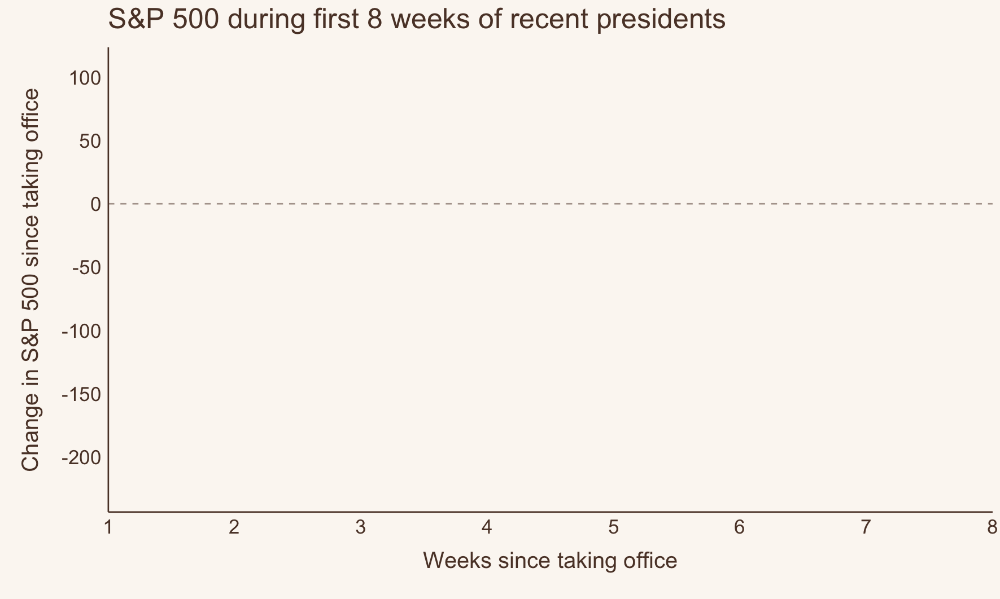

Using {quantmod} & {gganimate} to explore market changes under recent presidents.
animated figure
data visualization
Author
Jess Graves
Published
March 9, 2025
How does Trump’s first 8 weeks compare to other recent presidents?
It’s no secret that the market ain’t looking so hot under President Trump so far. Who’s all saying it:
CNN: “Trump’s week of whiplash rattles markets, allies and his own administration”
CNBC: “Trump says he’s not even looking at stock market, tariffs will make U.S. ‘very strong’”
Business Insider: “It’s not just tariff anxiety. The market’s whole bull case under Trump has been turned on its head.”
NBC: “Stocks fall as markets grapple with Trump’s rapid shifts in tariff policy”
But, based on what my not-very-tenured memory can recall, a lot of presidents have suffered market volatility during the start of their terms. But, I had no data to back that up. So…
I thought this was a great opportunity to try to:
Look at and track down data I don’t usually interact with (market data, politics)
This scrapes financial data during a user-specified time frame -– I chose 1980 and on. You can choose any stock or index you’re interested in. I’ve chosen to use the S&P 500, which is labeled as ^GSPC (I don’t know why because I don’t know anything about “the market” really, but that’s just how it is).
Libraries & themes
library(tidyverse)library(quantmod)library(patchwork)library(data.table)library(colorspace)library(ggrepel)library(gganimate)# library(gifski) # can't call this due to environment issueslibrary(av) library(gt)background <-"#FBF7F2"text <-"#5C4033"text_size <-14title_size <-16my_theme <-theme_classic() +theme(axis.text =element_text(size = text_size, color = text),axis.title.y =element_text(size = title_size, face ="bold", color = text,margin =margin(0, 10, 0, 10) ),axis.title.x =element_text(size = title_size, face ="bold", color = text,margin =margin(10, 0, 10, 0) ),axis.line =element_line(color = text),axis.ticks =element_blank(),legend.text =element_text(size = text_size, color = text),legend.title =element_text(size = text_size, color = text),panel.background =element_rect(fill = background,color = background ),plot.background =element_rect(fill = background,color = background ),plot.title =element_text(size =20, face ="bold", color = text),legend.background =element_rect(fill = background,color = background ) )theme_set(my_theme)
data(presidential) # from ggplot2presidential %>%gt()
name
start
end
party
Eisenhower
1953-01-20
1961-01-20
Republican
Kennedy
1961-01-20
1963-11-22
Democratic
Johnson
1963-11-22
1969-01-20
Democratic
Nixon
1969-01-20
1974-08-09
Republican
Ford
1974-08-09
1977-01-20
Republican
Carter
1977-01-20
1981-01-20
Democratic
Reagan
1981-01-20
1989-01-20
Republican
Bush
1989-01-20
1993-01-20
Republican
Clinton
1993-01-20
2001-01-20
Democratic
Bush
2001-01-20
2009-01-20
Republican
Obama
2009-01-20
2017-01-20
Democratic
Trump
2017-01-20
2021-01-20
Republican
Notably, the dataset is missing some features I care about:
It stops at Trump’s 1st term (2021)
It doesn’t separate out 2nd terms
So, I had to manually enter the rest of the data myself. Open this code fold at your own risk, it’s not pretty.
Now, I will need to match dates within the market data to each president’s terms.
To do this, I will expand the presidential data into a long format where there is a single column of the sequential dates in each term. I’m going to write a custom function to help me out here.
(🤔 In retrospect, I did not need to write this function because there are no gaps between terms… but alas, this problem generalizes to other messier data like these, so will include it in case it’s helpful to anyone reading).
# Function to generate date sequences for each presidentexpand_dates <-function(start_date, end_date) {# If the end date is NA, use today's dateif (is.na(end_date)) { end_date <-Sys.Date() }# Generate the sequence of datesseq(start_date, end_date, by ="day")}# Expand the data frameexpanded_df <- presidential %>%rowwise() %>%mutate(date =list(expand_dates(start, end))) %>%unnest(date) %>%ungroup()
This data didn’t need much cleaning, but I did notice that the gspc object doesn’t have traditional row.names–instead you need to use index() if you want to extract the dates in the rows.
I also need to generate a variable where presidents will have their party colors when plotted, with the added detail that more recent presidents have darker shades of that color.
Cleaning up the data and merging in president information
gspc2 <-as_tibble(gspc)gspc2$date <-as.Date(index(gspc))expanded_gspc <- gspc2 %>% dplyr::select(GSPC.Close, date) %>%left_join(., expanded_df %>% dplyr::select(name, party, date, start) %>%rename(start_of_term = start))recent_pres <- expanded_gspc %>%filter(start_of_term >=min(gspc2$date)) %>%mutate(gspc_log =log(GSPC.Close)) %>%group_by(name) %>%# creating a variable that will be used to have party colors where more recent terms have darker valuesmutate(time =as.numeric(as.Date("1970-01-01") - start_of_term),time_party =if_else(party =="Republican",-1* time /150, # re-scaling time /200 ) )
The market since 1980’s
Let’s just get a sense of what “the market” has done over the last 45 years.
It’s generally increased over time. We can see that the recession that plagued Bush after Clinton left office, and the post-Bush Jr & into Obama recession ~ 2009 (yay! that was when I graduated college and entered the workforce.) COVID related dips in the 2020s were brief, but pretty dramatic.
Figure 1. S&P 500 since 1980’s to today (natural log scale used to improve readabilty)
Changes in market data
Trump’s been in office for almost 2 months, so I’ll be looking at the first 8 weeks of data for every president since 1980.
Overall, the first 8 weeks in Trump’s 2nd term have shown the hardest falls in S&P 500 value compared to any of the presidents here. 2nd in the running is Bush Jr.’s 1st term, followed by Obama’s 1st term.
Figure 2. Changes in S&P 500 over the first 8 weeks of each president’s term (1980 and on)
Now let’s animate it

Animated trajectory of S&P 500 during each presidents first 8 weeks
Code
# Save the animation as a .gif fileanim_save("snp-final.gif", p1 +geom_label(aes(label = name, color = time_party)) +transition_reveal(days_from_start),fps =10,height =15,width =25,units ="cm",res =180,end_pause =30,renderer =gifski_renderer())#
Code
# Save the animation as a .mp4anim_save("snp-final.mp4", p1 +geom_label(aes(label = name, color = time_party)) +transition_reveal(days_from_start),fps =10,height =15,width =25,units ="cm",res =180,end_pause =30,renderer =av_renderer())
Citation
BibTeX citation:
@online{graves2025,
author = {Graves, Jess},
title = {How Has the Market Historically Responded to the First 2
Months of a President’s Term?},
date = {2025-03-09},
url = {https://JessLGraves.github.io/posts/2025-03-09-presidents-snp/},
langid = {en}
}
---title: "How has the market historically responded to the first 2 months of a president's term?"description: "Using {quantmod} & {gganimate} to explore market changes under recent presidents."author: - name: Jess Gravesdate: 03-09-2025execute-dir: projectcrossref: fig-title: '**Figure**' tbl-title: '**Table**' fig-labels: arabic tbl-labels: arabic title-delim: "."link-citations: trueexecute: echo: true warning: false message: falsecategories: [animated figure, data visualization] # self-defined categoriesimage: preview-image.pngdraft: false # bibliography: references.bibnocite: | @*# csl: statistics-in-biosciences.cslbibliographystyle: apacitation: true---# How does Trump's first 8 weeks compare to other recent presidents?It's no secret that the market ain't looking so hot under President Trump so far. Who's all saying it:- [CNN](https://www.cnn.com/2025/03/08/politics/trump-whiplash-tariffs-ukraine-musk/index.html): "Trump’s week of whiplash rattles markets, allies and his own administration"- [CNBC](https://www.cnbc.com/2025/03/06/trump-says-hes-not-even-looking-at-stock-market.html): "Trump says he’s not even looking at stock market, tariffs will make U.S. ‘very strong’"- [Business Insider](https://www.businessinsider.com/trump-deregulation-policy-tariffs-market-crypto-antitrust-enforcement-gdp-growth-2025-3): "It's not just tariff anxiety. The market's whole bull case under Trump has been turned on its head."- [NBC](https://www.nbcnews.com/business/markets/stocks-fall-even-trump-gives-mexico-one-month-reprieve-tariffs-rcna195160): "Stocks fall as markets grapple with Trump's rapid shifts in tariff policy"But, based on what my not-very-tenured memory can recall, a lot of presidents have suffered market volatility during the start of their terms. But, I had no data to back that up. So...I thought this was a great opportunity to try to:1. Look at and track down data I don't usually interact with (market data, politics)2. Practice data vis skills3. Learn how to use {[gganimate](https://gganimate.com)}! - Surprise! I had issues getting this to export, but using {[gifski](https://cran.r-project.org/web/packages/gifski/index.html)} to render ended up resolving my issue.# The data## Presidential dataI have two datasets to work with:1. The [`presidential`](https://ggplot2.tidyverse.org/reference/presidential.html?q=presidential#ref-usage) dataset from {[`ggplot2`](https://ggplot2.tidyverse.org)} - The `data(presidential)` has the start and end dates for every president since Eisenhower and their party affiliation2. S&P 500 data from {[`quantmod`](https://www.quantmod.com)} - This scrapes financial data during a user-specified time frame -– I chose 1980 and on. You can choose any stock or index you're interested in. I've chosen to use the S&P 500, which is labeled as `^GSPC` (I don't know why because I don't know anything about "the market" really, but that's just how it is).```{r}#| code-summary: Libraries & themeslibrary(tidyverse)library(quantmod)library(patchwork)library(data.table)library(colorspace)library(ggrepel)library(gganimate)# library(gifski) # can't call this due to environment issueslibrary(av) library(gt)background <-"#FBF7F2"text <-"#5C4033"text_size <-14title_size <-16my_theme <-theme_classic() +theme(axis.text =element_text(size = text_size, color = text),axis.title.y =element_text(size = title_size, face ="bold", color = text,margin =margin(0, 10, 0, 10) ),axis.title.x =element_text(size = title_size, face ="bold", color = text,margin =margin(10, 0, 10, 0) ),axis.line =element_line(color = text),axis.ticks =element_blank(),legend.text =element_text(size = text_size, color = text),legend.title =element_text(size = text_size, color = text),panel.background =element_rect(fill = background,color = background ),plot.background =element_rect(fill = background,color = background ),plot.title =element_text(size =20, face ="bold", color = text),legend.background =element_rect(fill = background,color = background ) )theme_set(my_theme)``````{r}#| code-fold: falsedata(presidential) # from ggplot2presidential %>%gt()```Notably, the dataset is missing some features I care about:1. It stops at Trump's 1st term (2021)2. It doesn't separate out 2nd termsSo, I had to manually enter the rest of the data myself. Open this code fold at your own risk, it's not pretty.```{r}#| code-summary: 'Beware! manual data cleaning'presidential <- presidential %>%arrange(start) %>%rbind( .,tibble(name =c("Obama 2nd","Biden","Trump","Bush Jr. 2nd","Clinton 2nd" ),start =as.Date(c("2013-01-20","2021-01-20","2025-01-20","2005-01-20","1997-01-20" )),end =as.Date(c("2017-01-20","2025-01-20", NA,"2009-01-20","2001-01-20" )),party =c("Democratic","Democratic","Republican","Republican","Democratic" ) ) )presidential$name[presidential$name =="Bush"] <-c("Bush Sr.", "Bush Jr. 1st")presidential$name[presidential$name =="Trump"] <-c("Trump 1st", "Trump 2nd")presidential$name[presidential$name =="Clinton"] <-c("Clinton 1st")presidential$name[presidential$name =="Obama"] <-c("Obama 1st")presidential$end[presidential$name =="Clinton 1st"] <-as.Date("1997-01-20")presidential$end[presidential$name =="Obama 1st"] <-as.Date("2013-01-20")presidential$end[presidential$name =="Bush Jr. 2nd"] <-as.Date("2009-01-20")presidential <- presidential %>%arrange(start)presidential$name <-factor(presidential$name,levels = presidential$name)``````{r}#| label: tbl-data#| tbl-cap: Final presidential datasetpresidential %>%gt()```Now, I will need to match dates within the market data to each president's terms.To do this, I will expand the presidential data into a long format where there is a single column of the sequential dates in each term. I'm going to write a custom function to help me out here.(🤔 In retrospect, I did not need to write this function because there are no gaps between terms... but alas, this problem generalizes to other messier data like these, so will include it in case it's helpful to anyone reading).```{r}#| code-fold: false# Function to generate date sequences for each presidentexpand_dates <-function(start_date, end_date) {# If the end date is NA, use today's dateif (is.na(end_date)) { end_date <-Sys.Date() }# Generate the sequence of datesseq(start_date, end_date, by ="day")}# Expand the data frameexpanded_df <- presidential %>%rowwise() %>%mutate(date =list(expand_dates(start, end))) %>%unnest(date) %>%ungroup()``````{r}#| label: tbl-expanded-data#| tb-cap: Example rows of expanded datasetexpanded_df %>% dplyr::select(name, party, date) %>%filter(name %in%c('Eisenhower', 'Kennedy')) %>%group_by(name) %>%slice(1:5) %>%gt()```## Market dataHere I use `getSymbol()` from the {`quantmod`} package to get S&P 500 data, starting from `1980-01-01`, because I am not a masochist.```{r}#| code-fold: falsegspc <-getSymbols("^GSPC",auto.assign =FALSE,from ="1980-01-01")```This data didn't need much cleaning, but I did notice that the `gspc` object doesn't have traditional `row.names`–instead you need to use `index()` if you want to extract the dates in the rows.I also need to generate a variable where presidents will have their party colors when plotted, with the added detail that more recent presidents have darker shades of that color.```{r}#| code-summary: Cleaning up the data and merging in president informationgspc2 <-as_tibble(gspc)gspc2$date <-as.Date(index(gspc))expanded_gspc <- gspc2 %>% dplyr::select(GSPC.Close, date) %>%left_join(., expanded_df %>% dplyr::select(name, party, date, start) %>%rename(start_of_term = start))recent_pres <- expanded_gspc %>%filter(start_of_term >=min(gspc2$date)) %>%mutate(gspc_log =log(GSPC.Close)) %>%group_by(name) %>%# creating a variable that will be used to have party colors where more recent terms have darker valuesmutate(time =as.numeric(as.Date("1970-01-01") - start_of_term),time_party =if_else(party =="Republican",-1* time /150, # re-scaling time /200 ) ) ```# The market since 1980'sLet's just get a sense of what "the market" has done over the last 45 years.It's generally increased over time. We can see that the recession that plagued Bush after Clinton left office, and the post-Bush Jr & into Obama recession \~ 2009 (yay! that was when I graduated college and entered *the workforce*.) COVID related dips in the 2020s were brief, but pretty dramatic.```{r}#| code-summary: plot code #| label: fig-snp-over-time#| fig-cap: S&P 500 since 1980's to today (natural log scale used to improve readabilty)#| fig-width: 10#| fig-height: 6# label datasetpres_labels <- recent_pres %>%group_by(name, start_of_term, time_party) %>%arrange(name, start_of_term) %>%summarize(y.position =first(GSPC.Close)) # Figuresnp_over_time <- recent_pres %>%ggplot(aes(x = date,y =log(GSPC.Close),color = time_party,group = name )) +geom_line(linewidth =1.5) +scale_x_date(expand=c(0, 0.01),date_breaks ="5 years",date_labels ="%Y", limits =c(as.Date('1981-01-01'), as.Date('2025-12-31')) ) +scale_y_continuous(breaks = scales::pretty_breaks(10),# limits = c(-300, 150) ) +theme(legend.position ="none") +labs(x ="",y ="S&P 500 at closing\n(natural log scaled)",color ="",title ="S&P 500 since the 1980's" ) +scale_color_continuous_diverging(palette ="Blue-Red",l1 =20, l2 =90,p1 =1, p2 =1,alpha =1 ) +geom_label_repel(data = pres_labels,aes(x = start_of_term,y =log(y.position),label = name,color = time_party ),nudge_y = .75,max.overlaps =10 )snp_over_timeggsave("preview-image.png", snp_over_time,units ="cm",height =30*.6,width =30)```# Changes in market dataTrump's been in office for almost 2 months, so I'll be looking at the first 8 weeks of data for every president since 1980.Overall, the first 8 weeks in Trump's 2nd term have shown the hardest falls in S&P 500 value compared to any of the presidents here. 2nd in the running is Bush Jr.'s 1st term, followed by Obama's 1st term.```{r}#| label: fig-changes#| fig-cap: Changes in S&P 500 over the first 8 weeks of each president's term (1980 and on)#| fig-height: 5#| fig-width: 8weeks_in_office <-8from_start <- recent_pres %>%group_by(name) %>%arrange(date) %>%mutate(start =first(GSPC.Close),change = GSPC.Close - start,days_from_start =as.numeric(date -first(date)) ) %>%# 7-day rolling averagemutate(mean_change =frollmean(change, 6), ) %>%ungroup()from_start_first_8_weeks <- from_start %>%filter(days_from_start <=7* weeks_in_office)pres_labels_end <- from_start_first_8_weeks %>%group_by(name) %>%filter(date ==last(date))p1 <- from_start_first_8_weeks %>%ggplot(aes(x = days_from_start,y = mean_change,color = time_party,group = name )) +geom_hline(yintercept =0,linetype =2,color = text,alpha =0.5 ) +geom_line(aes(group = name),size =1.5 ) +scale_x_continuous(expand =c(0, 0),limits =c(7, weeks_in_office *7),breaks =seq(7, weeks_in_office *7, by =7),labels =c(1:8) ) +scale_y_continuous(breaks = scales::pretty_breaks(10),# limits = c(-300, 150) ) +theme(legend.position ="none") +labs(x ="Weeks since taking office",y ="Change in S&P 500 since taking office",color ="",title ="S&P 500 during first 8 weeks of recent presidents" ) +scale_color_continuous_diverging(palette ="Blue-Red",l1 =20, l2 =90,p1 =1, p2 =1,alpha =1 ) p1_labels <- p1 +geom_label_repel(data=pres_labels_end,aes(x=days_from_start, y=mean_change, label=name) )p1_labelsggsave('snp-changes.png', p1_labels,units='cm', width =25, height =15)```# Now let's animate it```{r}#| eval: false# Save the animation as a .gif fileanim_save("snp-final.gif", p1 +geom_label(aes(label = name, color = time_party)) +transition_reveal(days_from_start),fps =10,height =15,width =25,units ="cm",res =180,end_pause =30,renderer =gifski_renderer())#``````{r}#| eval: false# Save the animation as a .mp4anim_save("snp-final.mp4", p1 +geom_label(aes(label = name, color = time_party)) +transition_reveal(days_from_start),fps =10,height =15,width =25,units ="cm",res =180,end_pause =30,renderer =av_renderer())```